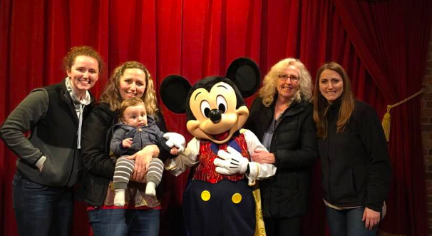

A Little About Me
My name is Kerri McMahon, and my hometown is Patchogue, New York. I come from a family of three children, and am the youngest of my siblings. I created this site to give more of a well-rounded insight of who I am and what I am about. I am an aspiring Computer Scientist. My main areas of interest include high-performance compilers (specifically compilation optimization techniques), programming languages, and the role that high-performance compilation techniques play in our deeper understanding of quantum computing systems.
My GitHub

My family and I. From left: Me, my older sister Trish with my nephew, Cristiano, Mickey, my mother Peggy, and my other older sister Kristen.
Hobbies/Guilty Pleasures:
Astrology:
I am extremely fascinated by and actively resarch the theory of planetary placements affecting our daily lives, as well as deep analysis of each of the 12 signs, their origins and the reasons for their assigned "characteristics". For those who share these same interests, my sun sign is Virgo, my moon sign is Gemini, and my ascendant sign is Scorpio. If you are curious about what this means, I suggest referring to
here. Happy Sagittarius season!
Video Games:
There is no better night spent than with your friends, pulling an all-nighter with everyone who is online, and to be in a live voice chat session while you play your favorite games together (never on a school night). The logo for my webpage is inspired by the subclass I play in one of my favorite games, Destiny. The beauty and magnitude that this game, created by Bungie, had on my adolescence is what initally sparked my curiosity about Computer Science. I absolutely needed to investigate how an amazing game was created. If I had never spent so much time on this game, I potentially never would have discovered my love for programming, and I never would have gotten to where I am now. The logo means a lot to me sentimentally, and always reminds me of how far I have come since the little 13 year old I was back then.